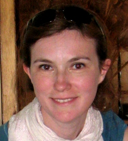
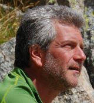

Credits¶
Content of the course¶
{kind=link}
Professor of GIS and Copernicus Uptake at the Politecnico di Milano (PoliMI), member of the School of Doctoral Studies in Data Science at “Roma La Sapienza” University. She was the Head of the Geomatics Laboratory of PoliMI (1997- 2011) and the Vice-Rector of PoliMI for the Como Campus (2011-2016). She is the chair of ISPRS WG IV/4 “Collaborative crowdsourced cloud mapping (C3M)”; member of ESA ACEO (Advisory Committee of Earth Observation); co-chair of the United Nations Open GIS Initiative, Chair of the UN-GGIM (Global Geospatial Information Management) Academic Network, mentor of the PoliMI Chapter of YouthMappers (PoliMappers).

{kind=link}
Daniela Carrion is Assistant Professor at Politecnico di Milano, teacher of GIS and Geospatial data processing and mapping for crisis management. She acquired expertise on crisis mapping during a two year experience as post-doc at the Joint Research Centre (Ispra, Italy) of the European Commission, where she performed technical and scientific validation of Emergency Services and Crisis Maps. She is co-chair of the Commission on Ubiquitous Mapping of the International Cartographic Association. Her main research activities are: use of Volunteered Geographic Information for environmental applications and Crisis Mapping, database design and implementation, map readability, geoid computation, height datum problem and gravity field interaction with levelling measurements.
{kind=link}
Marco GIANINETTO is Professor of Remote Sensing and Copernicus Uptake at Politecnico di Milano (Italy), and an Associate at the National Research Council of Italy. He is the head of the Laboratory of Remote Sensing , member of the Governing Council of the Italian Society of Remote Sensing , mentor for the Copernicus Accelerator programme of the European Commission, Co-Editor-in-Chief for European Journal of Remote Sensing , Associate Editor for International Journal of Remote Sensing , and Associate Editor for Journal of Applied Remote Sensing . Marco Gianinetto has been a co-author of the study Space Market Uptake in Europe for the European Parliament.
{kind=link}
Daniele Oxoli was born in Como, Italy, in 1990. He received the B.Sc. and M.Sc. degrees in Environmental Engineering in 2013 and 2015 from the Politecnico di Milano. In 2019, he obtained the PhD degree with honours in Geomatics Engineering from the Politecnico di Milano. He is currently a post-doc researcher at the Geomatics and Earth Observation laboratory (GEOlab) of Politecnico di Milano and he is involved in a number of research projects connected to the use and development of Free and Open Source GIS software and the statistical analysis of spatial data.

{kind=link}
Ludovico Giorgio Aldo Biagi. From 2015, Associate Professor at Politecnico di Milano. From 2017, Chair of the International Master of Science in Geoinformatics Engineering. Professor of Positioning and Location Based Services. From 2018, member of the Academic Board of the Ph.D. in Infrastructures and Transport dell’Università degli studi di Roma La Sapienza. From 2017, habilitated for the position of Full Professor in Geomatics. From 2011 to 2013 scientific responsible for the Geomatics Laboratory of the Politecnico di Milano. Author or coauthor of more than 100 national and international scientific research publications and 4 Italian research or academic books.
{kind=link}
Carlo Andrea Biraghi was born in Milan, Italy, in 1989. He received the B.Sc. and M.Sc. degree in architecture in 2011 and 2014 from the Politecnico di Milano. Since 2014 he works as freelance architect, artist and computational designer while teaching in several courses related to urban morphology and mathematics. In 2019, he obtained his PhD degree with honours from the Architecture, Built Environment and Construction Engineering Department of Politecnico di Milano. He is currently a post-doc research fellow at the Geomatics and Earth Observation laboratory (GEOlab) of Politecnico di Milano where is responsible for Citizen Science aspects of SIMILE project.
{kind=link}
Eng. Gorica Bratic obtained her BSc degree in Environmental Engineering at University of Novi Sad, Faculty of Technical Sciences in 2015 and MSC degree in Environmental and Geomatics Engineering at Politecnico di Milano in 2018. Since June 2018 she joined the GEOlab team of Politecnico di Milano as a temporary research fellow and in November 2018 she started her PhD on the Department of Civil and Environmental Engineering. Her main field of interest is inter-comparison and validation of global high-resolution land cover maps. Her research relies on Free and Open Source Software technologies.
{kind=link}
Chiara Gerosa was born in Lecco, Italy, in 1995. She received a B.sc. degree in Civil and Environmental Engineering in 2017 and a M.sc. degree with honors in Civil Engineering for Risk Mitigation in 2020. Since September 2020 she has joined the Geomatics and Earth Observation laboratory (GEOlab) team of Politecnico di Milano as a temporary research fellow. Her main research activity is related to Remote Sensing, Citizen Science and environmental data analysis in a GIS environment.
{kind=link}
Francesco Niccolò POLINELLI (MSc in Environmental and Land Planning Engineering) is a research assistant at Politecnico di Milano (Italy) and PhD candidate in Environmental and Infrastructure Engineering. His research interests are Remote Sensing technologies for Earth Observation, Geosciences and Machine Learning. The main field of application are the monitoring and mapping of vegetation, soil erosion analysis and the effects of climate change on land cover evolution.

Eng. Juan Fernando Toro Herrera is a Civil Engineer and Economist from the Universidad de Los Andes, Colombia, and obtained the specializing Master of Civil Engineering for Risk Mitigation at Politecnico di Milano in December 2018. He became part of the Geomatics and Earth Observation laboratory (GEOlab) team in August of 2019 as a temporary research fellow. In November 2019, he became a PhD student in the program of Infrastructure and Environmental Engineering at Politecnico di Milano. Currently, his work involves developing a web platform favouring water quality data sharing. His research interest includes spatial data analysis and spatial statistics.
{kind=link}
Alberto Vavassori was born in Sarnico (Bergamo), Italy, in 1995. He received the M.Sc. degree with honors in Environmental and Land Planning Engineering at Politecnico di Milano, with a thesis about the combined use of Remote Sensing and Volunteered Geographic Information for Crisis Mapping applications. Since September 2020 he is a temporary research fellow at the GEOlab of Politecnico di Milano. His research activity is focused on Geographic Information Systems, Remote Sensing and Citizen Science for environmental applications.
Web book creation¶
{kind=link}
Lorenzo Amici was born in Rome, Italy, in 1995. He received a B.sc. degree in Environmental Engineering at Roma La Sapienza university, and he currently is a student of the Master of Science in Geoinformatics Engineering at Politecnico di Milano. He recently started to collaborate with the GEOLab of Politecnico di Milano in the creation of online and offline documentation material.